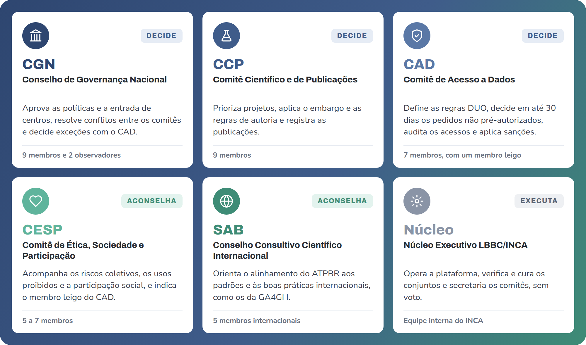
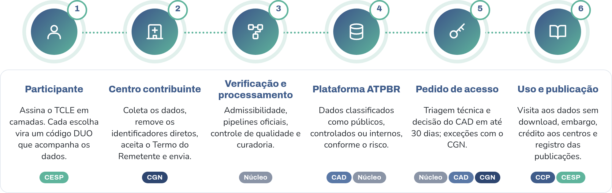

Em Arquitetura da plataforma, vimos o caminho técnico que os dados percorrem no ATPBR. Este capítulo trata das regras que valem ao longo desse caminho: quem é responsável por cada etapa, que condições um conjunto de dados precisa cumprir para entrar na plataforma e ser compartilhado, e como os participantes das pesquisas são protegidos.
Leia este capítulo antes de submeter dados ou de solicitar acesso a dados controlados. Os capítulos seguintes aplicam estas regras a cada situação: Submissão de dados a quem envia dados, Acesso aos dados a quem solicita acesso e Políticas de uso a quem recebe os dados.
Documentos e instrumentos de governança do ATPBR#
A governança do Atlas Tumoral da População Brasileira (ATPBR) se apoia em políticas institucionais, instrumentos de proteção dos participantes e termos que formalizam responsabilidades. Juntos, cobrem todo o ciclo de vida dos dados, da submissão à reutilização, em conformidade com a legislação brasileira e as boas práticas internacionais. A coluna Status indica se cada documento está aprovado, em revisão ou em elaboração; documentos que ainda não foram aprovados não devem ser lidos como normas vigentes.
Políticas institucionais#
| Documento | O que estabelece | A quem se destina | Status |
|---|---|---|---|
| Política de Governança de Dados | Princípios gerais de governança; papel do INCA como instituição coordenadora e mantenedora; instâncias de governança (CGN, CCP, CAD, CESP e SAB) e responsabilidades das instituições participantes; constituição e gestão do banco de dados; proteção dos participantes; segurança da informação e mecanismos de supervisão. | Todas as instituições, pesquisadores e profissionais envolvidos no ATPBR. | Em revisão. Será publicada na íntegra após aprovação. |
| Política de Fluxo e Acesso a Dados | Procedimentos de submissão, verificação, classificação e disponibilização dos dados; modalidades de acesso (público, registrado, controlado por visita aos dados e interno); critérios para solicitação e autorização de acesso, incluindo a pré-autorização por códigos DUO; atribuições do Comitê de Acesso a Dados; monitoramento e encerramento dos acessos concedidos. | Pesquisadores remetentes, solicitantes de acesso, Comitê de Acesso a Dados e operadores da plataforma. | Em revisão. Será publicada na íntegra após aprovação. |
Proteção de dados e direitos dos participantes#
| Documento | O que estabelece | A quem se destina | Status |
|---|---|---|---|
| Relatório de Impacto à Proteção de Dados Pessoais (RIPD) | Identifica e avalia os riscos do tratamento de dados pessoais e sensíveis na plataforma, individuais e coletivos, e descreve as medidas de segurança, salvaguardas e mecanismos adotados para preveni-los ou mitigá-los, em conformidade com a LGPD. | Instituições responsáveis pelo tratamento dos dados, encarregados de proteção de dados, equipes de governança e de segurança da informação e órgãos de fiscalização competentes. | Em revisão. Documento interno, por conter informações sobre riscos e controles de segurança; será publicado um resumo institucional. |
| Modelo de Termo de Consentimento Livre e Esclarecido (TCLE) em camadas | Modelo de referência que apresenta, de forma clara e estruturada, as finalidades de coleta, armazenamento, compartilhamento e reutilização dos dados em pesquisas futuras, com escolhas por camada (uso futuro, compartilhamento internacional, uso comercial, recontato e retorno de achados) registradas como códigos DUO. Não é uma autorização geral: cada estudo deve avaliar a compatibilidade entre seu consentimento, sua aprovação ética e os usos pretendidos. | Pesquisadores responsáveis pela coleta de dados, instituições participantes, Comitês de Ética em Pesquisa e participantes das pesquisas. | Em elaboração. O modelo será publicado; cada estudo adota a versão aprovada pelo seu CEP. |
Termos de responsabilidade e compartilhamento#
| Documento | O que estabelece | A quem se destina | Status |
|---|---|---|---|
| Termo de Acordo Institucional | Formaliza a adesão de cada instituição ao consórcio ATPBR e os acordos prévios exigidos pela Resolução CNS nº 738/2024 para bancos de dados constituídos com a participação de mais de uma instituição: contribuição, acesso e compartilhamento dos dados, responsabilidades, participação nos colegiados e crédito aos centros. | Instituições participantes e INCA. | Em elaboração. O modelo será publicado. |
| Termo de Responsabilidade do Pesquisador Remetente | Declarações e responsabilidades de quem submete dados ao ATPBR, aceitas na plataforma antes da primeira submissão: legitimidade da submissão, observância das aprovações éticas, compatibilidade com os consentimentos e autorizações aplicáveis, qualidade das informações e cumprimento das políticas da plataforma. | Pesquisadores responsáveis pela submissão de dados. | Em revisão. Será publicado na íntegra após aprovação. |
| Termo de Uso de Dados de Acesso Controlado (DAA) | Condições para o uso dos dados autorizados na instância segura do ATPBR, por visita aos dados e sem download: finalidade aprovada, confidencialidade, proibição de tentativas de reidentificação e de extração de dados individuais, exportação apenas de resultados verificados, medidas de segurança, comunicação de incidentes, custos de processamento quando aplicáveis e condições de encerramento do acesso. | Pesquisadores e instituições autorizados a acessar dados controlados. | Em elaboração. O modelo será publicado. |
| Acordo de Transferência de Dados (DTA) | Condições jurídicas, institucionais e técnicas para o envio de dados das instituições de origem ao ATPBR: finalidades autorizadas, responsabilidades, medidas de proteção, restrições de uso e condições de armazenamento e retenção. | Instituições de origem que contribuem com dados e INCA. | Em elaboração. O modelo será publicado. |
As regras de funcionamento dos colegiados ficam em regimentos próprios, em elaboração: o Regimento do CAD (composição, prazos e recursos) e o Regimento do CCP (período de embargo, autoria e crédito aos centros).
Compromisso com o uso responsável dos dados#
O ATPBR adota uma abordagem de acesso responsável, considerando a natureza dos dados, suas condições de uso e os direitos dos participantes das pesquisas.
As permissões de uso de cada conjunto de dados são classificadas com a Data Use Ontology (DUO), da Global Alliance for Genomics and Health (GA4GH), o que padroniza as restrições de uso e sua interpretação nos pedidos de acesso. A classificação DUO auxilia a leitura das permissões, mas não substitui a verificação do consentimento e da aprovação ética de cada estudo.
O compartilhamento de dados observa as aprovações éticas, as bases legais aplicáveis e os instrumentos institucionais pertinentes, garantindo que cada conjunto seja utilizado exclusivamente dentro das condições autorizadas. Os dados de acesso controlado são analisados por visita aos dados, na instância segura do ATPBR, sem download.
Esses documentos seguem a legislação e as normas éticas aplicáveis à pesquisa com seres humanos, entre elas:
- Lei Geral de Proteção de Dados Pessoais (LGPD, Lei nº 13.709/2018).
- Lei nº 14.874/2024, que dispõe sobre a pesquisa com seres humanos, e sua regulamentação.
- Resoluções CNS nº 466/2012 (pesquisa com seres humanos), nº 340/2004 (genética humana) e nº 738/2024 (bancos de dados para pesquisa).
- Resolução CD/ANPD nº 19/2024 (transferência internacional de dados pessoais).
- Políticas de Governança, de Segurança Cibernética e de Gestão de Crises do INCA.
As políticas do ATPBR complementam, mas não substituem, a aprovação ética de cada pesquisa, os termos de consentimento e os acordos firmados entre as instituições. Os documentos aprovados são publicados na íntegra nesta documentação, para consulta antes do aceite do Termo de Responsabilidade ou de um pedido de acesso; os documentos internos, como o RIPD, têm resumo público. Dúvidas podem ser enviadas para atpbr@inca.gov.br.
Princípios#
A gestão dos dados no ATPBR segue, entre outros, estes princípios:
- Finalidade científica: os dados são usados para objetivos de pesquisa legítimos, definidos e compatíveis com as condições em que foram obtidos.
- Proteção dos participantes: respeito à dignidade, à autonomia, à confidencialidade e às escolhas manifestadas por cada participante, e prevenção de riscos coletivos, como a estigmatização de grupos populacionais, étnicos, comunitários ou territoriais.
- Necessidade e proporcionalidade: cada uso recebe apenas os dados adequados à finalidade autorizada.
- Regularidade ética: as aprovações éticas, os termos de consentimento e as decisões éticas pertinentes são sempre observados.
- Qualidade e integridade científica: os dados são mantidos íntegros, contextualizados e rastreáveis até a sua origem.
- Segurança e prevenção: as salvaguardas são proporcionais aos riscos de acesso indevido, reidentificação e uso incompatível.
- Segregação de funções: quem prepara, quem valida, quem decide e quem executa são pessoas ou instâncias distintas.
- Responsabilização: as decisões ficam registradas, de modo que se possa demonstrar a regularidade de cada operação.
- Transparência e interoperabilidade: as regras da plataforma são públicas, e os dados seguem metadados, vocabulários controlados e identificadores padronizados.
Autorizações diferentes, que não se substituem#
Um mesmo conjunto de dados pode depender de várias autorizações. Cada uma tem uma finalidade própria, e nenhuma dispensa as outras:
| Autorização | Quem concede | O que garante |
|---|---|---|
| Aprovação ética | Comitê de Ética em Pesquisa (CEP) ou Comissão Nacional de Ética em Pesquisa (Conep) | Que a pesquisa, de origem ou nova, é eticamente regular |
| Consentimento do participante (ou sua dispensa) | O participante; a dispensa só pode ser concedida pela instância ética competente | Que o participante autorizou o uso dos seus dados, nas condições do termo assinado |
| Anuência da instituição provedora | Representante habilitado da instituição que forneceu os dados | Que a instituição de origem concorda com aquele compartilhamento |
| Autorização de acesso | Comitê de Acesso a Dados (CAD) do ATPBR | Que um pedido específico de acesso controlado é compatível com as condições do conjunto |
Duas consequências práticas:
- A aprovação ética do estudo de origem não autoriza, por si só, qualquer novo uso ou compartilhamento dos dados.
- Ser aceito pelo sistema não equivale a ser admitido. O preenchimento dos campos e o envio dos arquivos não constituem, sozinhos, autorização de incorporação, publicação ou uso científico.
Quem é quem#
A governança do consórcio se apoia em seis instâncias com papéis complementares: três decidem, duas aconselham e uma executa.

| Participante | Principais responsabilidades |
|---|---|
| INCA – Instituição coordenadora e mantenedora | Desenvolveu o ATPBR e mantém sua infraestrutura, operação e equipe executiva (Núcleo Executivo/LBBC). As decisões sobre ciência, acesso e ética são tomadas pelos colegiados do consórcio (CGN, CCP, CAD, CESP e SAB), nos quais os centros participantes têm assento e voto. Para fins da LGPD, o INCA atua como controlador dos dados tratados na plataforma, em conjunto com os centros participantes, que permanecem controladores dos dados que originam. |
| Instituições de origem (provedoras) | Asseguram a regularidade da coleta e do consentimento; removem os identificadores diretos e guardam, separadamente, as chaves de correspondência; informam permissões e restrições; comunicam alterações e retiradas de consentimento; cooperam no atendimento aos participantes e na resposta a incidentes. Para fins da LGPD, permanecem controladoras dos dados que originam. |
| Pesquisadores remetentes | Preparam e enviam os dados conforme os padrões da plataforma, apresentam a documentação ética e as permissões de cada conjunto e aceitam o Termo de Responsabilidade do Pesquisador Remetente. |
| Núcleo Executivo e Curadoria Operacional (LBBC/INCA) | Equipe interna que executa a operação: verifica integridade, completude, qualidade, proveniência e documentação ética de cada conjunto, registra pendências, roda os pipelines, cura dados e metadados (incluindo os códigos DUO), apoia os centros na submissão, monitora e audita os acessos concedidos e secretaria os comitês, sem voto. Reporta ao CGN. |
| Equipes técnicas e de segurança | Implementam os controles da plataforma: perfis de acesso, autenticação, criptografia, registros de auditoria, cópias de segurança e tratamento de vulnerabilidades. |
| Conselho de Governança Nacional (CGN) | Instância máxima e deliberativa, com 9 membros com voto e 2 observadores (Decit/MS e CNPq). Define a estratégia, aprova a entrada de centros e as políticas gerais, resolve conflitos entre os comitês e decide, junto com o CAD, os casos excepcionais, como uso comercial e transferência internacional ampla. |
| Comitê Científico e de Publicações (CCP) | Deliberativo, com 9 membros. Avalia propostas de análise, define projetos prioritários, evita sobreposição entre grupos, aplica as regras de embargo e autoria e registra manuscritos e apresentações. |
| Comitê de Acesso a Dados (CAD) | Deliberativo, com 7 membros, entre eles um membro leigo indicado pelo CESP e um representante do Banco Nacional de Tumores (BNT), que articula o comitê com o BNT e com os dados clínico-patológicos. Define as regras de compatibilidade com os códigos DUO, decide em até 30 dias os pedidos de acesso controlado não pré-autorizados e pode suspender ou revogar acessos em caso de descumprimento. |
| Comitê de Ética, Sociedade e Participação (CESP) | Consultivo, com 5 a 7 membros, incluindo representantes de pacientes e de minorias étnico-raciais. Acompanha os riscos coletivos, os usos proibidos e a participação social, e indica o membro leigo do CAD. |
| Conselho Consultivo Científico Internacional (SAB) | Consultivo, com 5 membros internacionais. Orienta o alinhamento do ATPBR aos padrões e às boas práticas internacionais, como os da GA4GH. |
| Pesquisadores e instituições destinatários | Usam os dados apenas na finalidade autorizada, mantêm confidencialidade e segurança, não tentam reidentificar participantes e cumprem o instrumento de uso firmado; respeitam os períodos de embargo e citam o ATPBR e os centros de origem. |
As funções são exercidas por pessoas formalmente designadas pelo INCA, com substitutos definidos, e organizadas em uma matriz de responsabilidades que separa quem fornece os dados, quem os verifica, quem decide sobre sua incorporação ou disponibilização e quem executa e supervisiona. Os membros dos colegiados têm mandato de 2 anos, renovável uma vez, declaram conflitos de interesse todo ano e a cada pauta, e quem submete um conjunto não vota sobre ele. Nenhum membro ocupa cadeira no CCP e no CAD ao mesmo tempo, e não há cadeira para empresas.
O caminho dos dados e quem atua em cada etapa#

As etiquetas abaixo de cada etapa indicam as instâncias que atuam nela.
Proteção dos participantes#
Os dados recebidos pelo ATPBR não incluem informações de identificação direta dos participantes.
Cada participante e amostra recebe um código, permitindo integrar informações clínicas e genômicas sem identificar diretamente as pessoas. A correspondência entre os códigos e as identidades fica protegida, exclusivamente sob responsabilidade da instituição de origem.
Todos os dados são tratados como informações pessoais sensíveis, seguindo a Lei Geral de Proteção de Dados (LGPD), com controles de acesso e cuidados adicionais para os dados genéticos.
Regras de proteção dos dados#
Antes do envio ao ATPBR, todas as instituições seguem regras padronizadas:
- Remoção dos identificadores pessoais (nome, CPF, Cartão Nacional de Saúde, RG, número de prontuário, matrícula, endereço, telefone e e-mail).
- Uso dos códigos de paciente e de amostra definidos pelo ATPBR (veja Sistema de identificação e barcode).
- Substituição das datas de eventos clínicos por número de dias a partir do diagnóstico (veja Dicionário de dados).
- Verificação de campos livres, nomes de arquivos, cabeçalhos e metadados técnicos, onde identificadores costumam aparecer sem que se perceba.
Ciclo de vida de um conjunto de dados#
| Etapa | O que acontece |
|---|---|
| 1. Cadastro e envio | O pesquisador remetente aceita o Termo de Responsabilidade, cadastra Projeto, Investigação, Estudo, Pacientes, Amostras, Ensaio, Arquivos e Experimentos e informa a documentação ética e as permissões de uso (veja Submissão de dados). |
| 2. Verificação de admissibilidade | Três verificações distintas e complementares: (i) automatizada, de campos obrigatórios, estrutura e vocabulários; (ii) técnica, de integridade, coerência e correspondência entre pacientes, amostras, experimentos e arquivos; e (iii) ético-documental, de pareceres, consentimento e permissões de origem. |
| 3. Resultado da validação | A equipe de validação registra o conjunto como apto, pendente de complementação ou não admitido, com a motivação e o responsável pela decisão. |
| 4. Processamento e curadoria | Os dados aptos são processados pela Plataforma analítica. A proveniência é preservada, e as restrições de origem acompanham os dados derivados. |
| 5. Classificação e divulgação | Cada material é classificado como de acesso público, controlado ou interno, e o que for público passa por uma avaliação de risco de reidentificação antes de ser divulgado (veja Acesso aos dados). Antes da abertura, o conjunto pode cumprir um período de embargo (moratória de publicação), durante o qual a primeira publicação é reservada ao projeto de origem; as regras de embargo e autoria são aplicadas pelo Comitê Científico e de Publicações (CCP). |
| 6. Acesso controlado | Pesquisadores solicitam acesso, e o CAD decide caso a caso (veja Acesso aos dados). |
| 7. Conservação e descarte | A necessidade de conservar dados e documentos é revista periodicamente, conforme as finalidades científicas, as obrigações legais e éticas e as condições de origem. |
Conjuntos pendentes ou não admitidos permanecem bloqueados: não aparecem para terceiros, não são publicados e não podem ser usados em novas pesquisas até a regularização. Mudanças relevantes depois da validação, como um novo documento, uma nova restrição ou novos pacientes, levam o conjunto a uma nova verificação.
Documentação ética e permissões de cada conjunto#
Cada conjunto de dados fica vinculado aos documentos que comprovam que ele pode entrar na plataforma e ser usado. Esse conjunto de registros forma o dossiê do conjunto.
| Nível | O que é informado e conferido |
|---|---|
| Projeto | Título, responsável científico, instituições participantes e aprovação ética, com os documentos comprobatórios, sua versão e sua validade |
| Estudo | Parecer ético pertinente, características da coorte, condições de divulgação no catálogo e restrições do estudo |
| Pacientes e Amostras | Tipo de consentimento, permissões e restrições de uso e códigos de identificação |
| Ensaio, Experimentos e Arquivos | As condições de uso acompanham os dados produzidos |
Os documentos esperados incluem o parecer do CEP ou da Conep, a versão do TCLE utilizada (ou a decisão de dispensa de consentimento), o instrumento de transferência de dados (DTA) e o registro das permissões de uso. Um campo preenchido sem o documento correspondente não supre a exigência de comprovação.
As permissões registradas em cada nível (Estudo, Paciente, Amostra, Ensaio e Arquivo) são consideradas em conjunto. Prevalece sempre a restrição mais protetiva, e uma divergência entre níveis, por exemplo um estudo liberado para uso geral com um paciente que recusou o uso futuro, impede a liberação até ser resolvida e documentada.
As permissões e restrições seguem a Data Use Ontology (DUO) da GA4GH, que padroniza condições como uso geral em pesquisa (GRU), pesquisa em saúde (HMB), doença específica (DS), uso não comercial (NCU), exigência de aprovação ética (IRB), colaboração com o pesquisador provedor (COL), restrição geográfica (GS) e moratória de publicação (MOR).
Uso futuro dos dados#
Usar os dados em uma nova pesquisa exige respeitar as condições do estudo de origem e as escolhas de cada participante:
| Situação do consentimento original | O que é necessário |
|---|---|
| O uso futuro foi autorizado | A nova pesquisa pode usar os dados nas condições autorizadas, com sua própria avaliação ética |
| O uso futuro não foi previsto | Novo consentimento ou dispensa concedida pela instância ética competente |
| O uso futuro foi expressamente recusado | Somente com novo consentimento do participante ou do seu responsável legal |
O CAD não concede dispensa de consentimento: essa competência é exclusiva da instância ética.
Acesso aos dados e Comitê de Acesso a Dados#
O que é público, o que é controlado e o que é de uso interno, assim como as etapas de um pedido de acesso controlado e a forma como o CAD decide, estão em Acesso aos dados. Dois pontos valem para todos os casos:
- Atuar no desenvolvimento do software ou na manutenção da infraestrutura não dá acesso aos dados de pesquisa. As permissões internas seguem uma matriz de perfis e o princípio do menor privilégio.
- O CAD, cuja composição está em Quem é quem, reúne-se mensalmente, e seus membros não participam das deliberações em que estejam impedidos. Quórum e demais regras estão no Regimento do CAD.
Amostras biológicas (fora do escopo do ATPBR)#
O ATPBR gerencia apenas dados. A governança das amostras biológicas (coleta, guarda, acesso, uso e transferência) é de competência do Banco Nacional de Tumores (BNT) do INCA e das instituições que as guardam, e não é regulada pelas políticas do ATPBR; o mesmo vale para os instrumentos sobre amostras, como o Acordo de Transferência de Material Biológico (MTA). A autorização de acesso a dados não inclui acesso às amostras correspondentes.
As permissões e restrições que se aplicam a uma amostra continuam valendo para os dados produzidos a partir dela.
Direitos dos participantes e retirada de consentimento#
Os participantes exercem seus direitos (acesso, correção, restrição e retirada dos dados) por meio da instituição de origem, que é quem guarda as chaves de correspondência. O atendimento é coordenado com o encarregado pelo tratamento de dados pessoais do INCA, e a plataforma localiza os registros pelos códigos, sem precisar receber nome ou documento do participante.
Quando há retirada de consentimento, nova restrição ou outra solicitação do participante:
- os conjuntos afetados são identificados pelos códigos de origem;
- novos usos incompatíveis são bloqueados;
- os pesquisadores que já receberam os dados são comunicados, quando necessário;
- as providências são documentadas, ressalvadas as hipóteses legais de retenção.
A instituição de origem e o pesquisador remetente devem comunicar prontamente ao ATPBR qualquer alteração que afete os dados enviados, como mudança de parecer ético, retirada de consentimento, nova restrição ou incidente de segurança.
Segurança, incidentes e rastreabilidade#
A plataforma segue a Política de Segurança Cibernética do INCA, com controles adicionais proporcionais aos seus riscos: gestão de perfis, acesso limitado ao necessário para cada função, autenticação reforçada para acessos privilegiados, criptografia, cópias de segurança e continuidade das operações.
São mantidos registros das solicitações, decisões, anuências, habilitações, acessos, downloads, suspensões, revogações e encerramentos, protegidos contra alteração indevida. Esses registros permitem reconstruir quem acessou qual conjunto, quando e com base em qual autorização.
Incidentes de segurança são tratados pelos procedimentos de privacidade e segurança do INCA, com a participação da equipe do ATPBR e a cooperação das instituições de origem. Pesquisadores que suspeitem de incidente, reidentificação ou uso indevido devem comunicar o INCA imediatamente.
Os riscos das operações da plataforma são avaliados no Relatório de Impacto à Proteção de Dados Pessoais (RIPD) do ATPBR.
Monitoramento e revisão#
A coordenação do ATPBR acompanha indicadores sobre a regularidade dos conjuntos, as decisões de disponibilização, as solicitações dos participantes, os incidentes e as medidas corretivas.
Mudanças relevantes na arquitetura da plataforma, nas categorias de dados, nas funcionalidades de acesso, nas instituições participantes ou nas condições de uso levam a uma avaliação do impacto sobre a governança, o protocolo ético, os instrumentos jurídicos e os controles de segurança.
A implementação dos controles é progressiva, mas cada operação só começa depois que os controles necessários a ela estão em funcionamento. Por isso, a divulgação pública e o acesso controlado só são ativados depois de concluídos os seus respectivos procedimentos.
Próximo capítulo → Submissão de dados: como cadastrar um projeto e enviar seus dados, aplicando as regras deste capítulo.